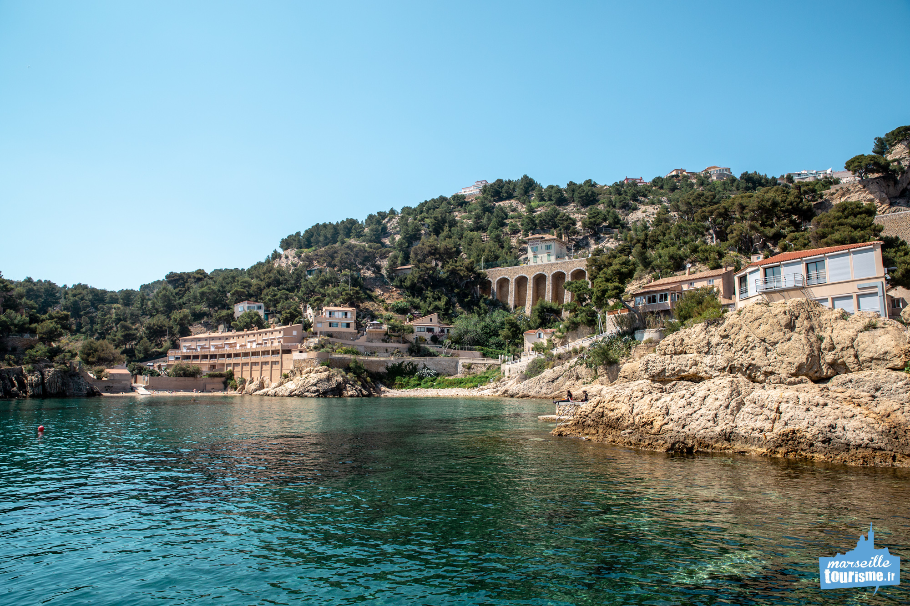
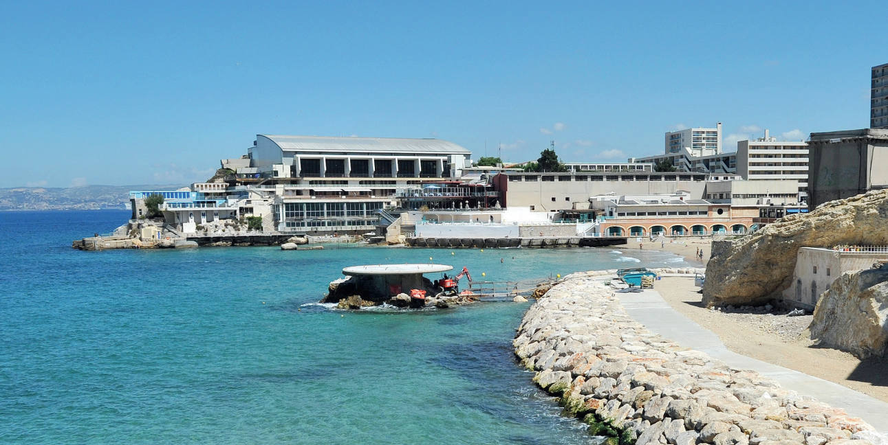
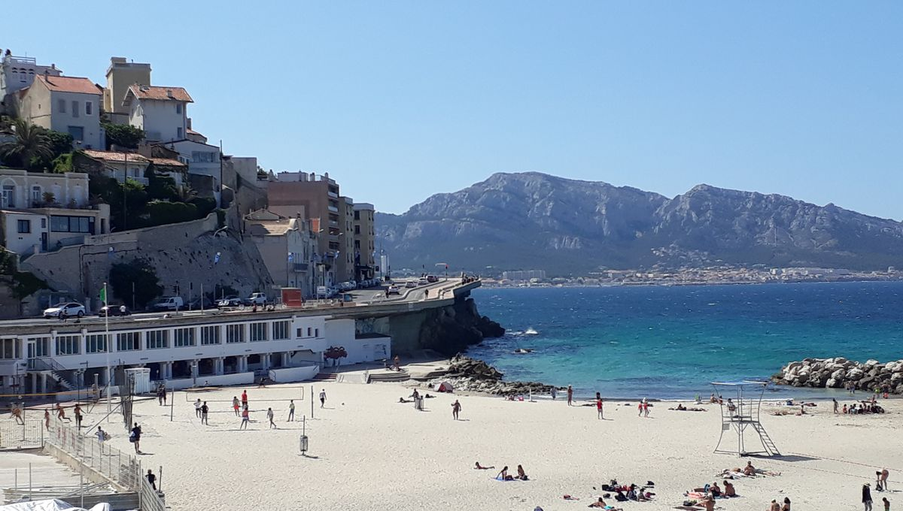

Les plages de Marseille
- Plage de Corbière 
- Plage des Catalans 
- Plage du prophète 
Quartier mythique de la ville, c’est ici que se trouvent les seules plages des quartiers Nord,
précédées de jardins paysagers avec une base nautique municipale. Trois plages se suivent, elles sont surveillées et faciles d’accès.
Peu profondes, en partie ombragées, elles sont de sable fin et de galets, équipées de sanitaires, douches et d’une consigne de vêtements gratuite.
La plage de sable proche du Vieux-Port et du centre-ville
C’est la plage de sable la plus accessible quand on se trouve dans le centre-ville de Marseille.
Située à quelques minutes à pied du Vieux-Port, elle permet de piquer une tête rapidement après une journée de balade ou de se rafraichir avant de continuer sa visite de Marseille.
En contrebas de la Corniche Kennedy, la Plage du Prophète est une plage, en libre accès, iconique de Marseille. Elle est très célèbre auprès des marseillais mais également des touristes car elle convient aux petits et aux grands !
La Plage du Prophète possède également un poste de secours, une buvette et des douches.Le soir, c’est le rendez-vous incontournable pour les apéros sur la plage ou pour un pique-nique.
Familles ou groupes d’amis s’y retrouvent pour profiter du coucher de soleil.
C’est la plus grande plage de Marseille, avec une succession de plusieurs plages en libre accès (Roucas Blanc, Prado Nord, Prado Sud, Plage de Borély, Vieille Chapelle, Huveaune…) durant 3,5km.
Elle est l’une des plus fréquentées de Marseille, et s’étire du David, célèbre statue du Prado,
jusqu’à la plage de la Vieille Chapelle proche de la Pointe Rouge. Elle est entourée de grandes étendues d’herbe qui deviennent le paradis des amateurs de football !
A quelques minutes du parc balnéaire du Prado, vous pouvez profiter de la plage de la Pointe-Rouge, plus grande plage sablonneuse de Marseille jouxtant le petit port du même nom.
Elle est souvent très fréquentée car à l’abri du vent ! Vous pouvez y louer un pédalo, faire du kite surf ou du paddle, partir faire de la plongée depuis le petit port ou louer un transat dans l’une des plages privées.
Le massif des Calanques offre des criques accessibles plus ou moins facilement après un peu de marche ! Port Pin, En-Vau, Sugiton, Morgiou, ou Sormiou (surveillée en été) … Des paysages paradisiaques vous y attendent. Prévoir de bonnes chaussures et de l’eau ! Attention : un arrêté préfectoral réglemente l’accès aux calanques au printemps et en été, n’autorisant pas le passage des voitures. Plus d’infos sur le site du Parc National des Calanques.